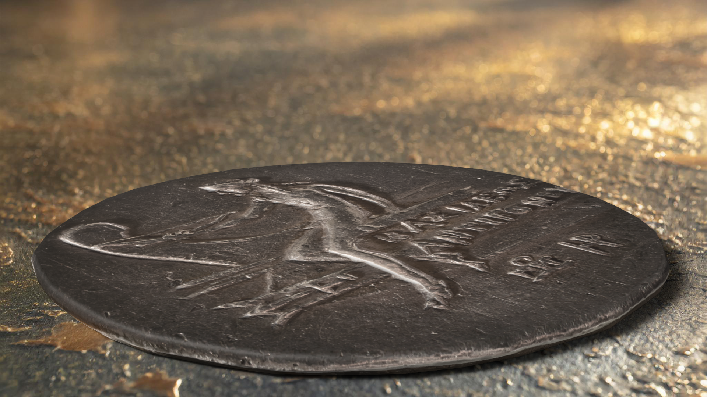
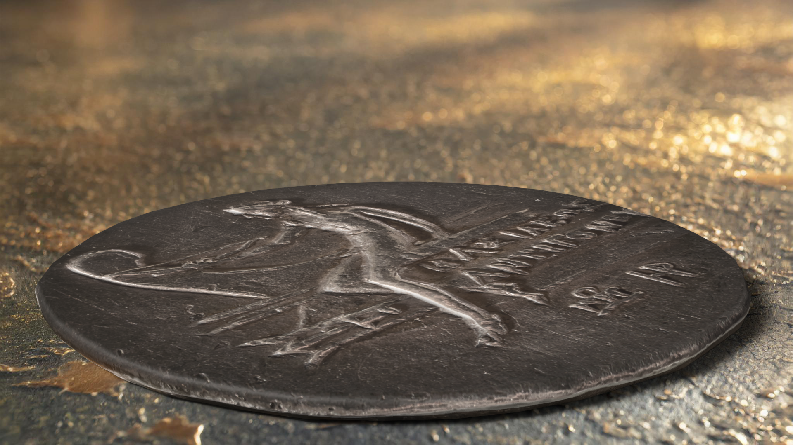

Mediterranean Numismatics is all about teaching kids like you the amazing stories behind ancient coins from the Mediterranean region. These coins were not just money—they were tools that helped people trade goods, spread ideas, and show the power of their kings and emperors. In ancient times, coins like the Byzantine Solidus, the Greek Tétradrachme, and the Roman Aureus were more than just shiny pieces of metal. They were used in busy marketplaces, carried on long trading journeys, and sometimes even made to celebrate big events or powerful rulers. Today, even though we use digital money, these coins help us uncover the lives and cultures of people from thousands of years ago. At Mediterranean Numismatics, we make history exciting and show how something as small as a coin can hold a big story!


The Aureus is a gold coin from ancient Rome, made during the reign of Emperor Marcus Aurelius, who is famous for being a wise ruler and philosopher. This coin was often used for big purchases or to pay soldiers. It showed images of the emperor to remind people of who was in charge. Imagine using a coin like this to pay for a Roman feast or armor for a soldier—it was a piece of history in your pocket! Today, it stands as a symbol of the wealth and power of the Roman Empire.


The Byzantine Solidus is a gold coin used in the Eastern Roman Empire, which lasted long after the fall of Rome. It was an important coin for trade and symbolized the wealth and power of the empire. This coin often featured an image of the emperor on one side and a Christian symbol on the other, showing how religion and leadership were deeply connected in Byzantine culture. Imagine it as the "dollar" of the ancient world—widely accepted and trusted for centuries!

 

The Tétradrachme is a large silver coin from ancient Greece, used during the reign of Antigone III Doson, a king of Macedonia over 2,000 years ago. This coin shows the strong connection between money and power in ancient Greece, often featuring the image of a ruler or a Greek god. Think of it as a symbol of how kings showed off their strength and how people traded for goods like olives, wine, and pottery in ancient markets.
Aureus de Marc Aurèle: Explore the intricacies of this ancient coin.
Byzantine Solidus: A glimpse into Byzantine history and culture.
Tetradrachme of Antigonos Doson: Discover the artistry of ancient Greece.